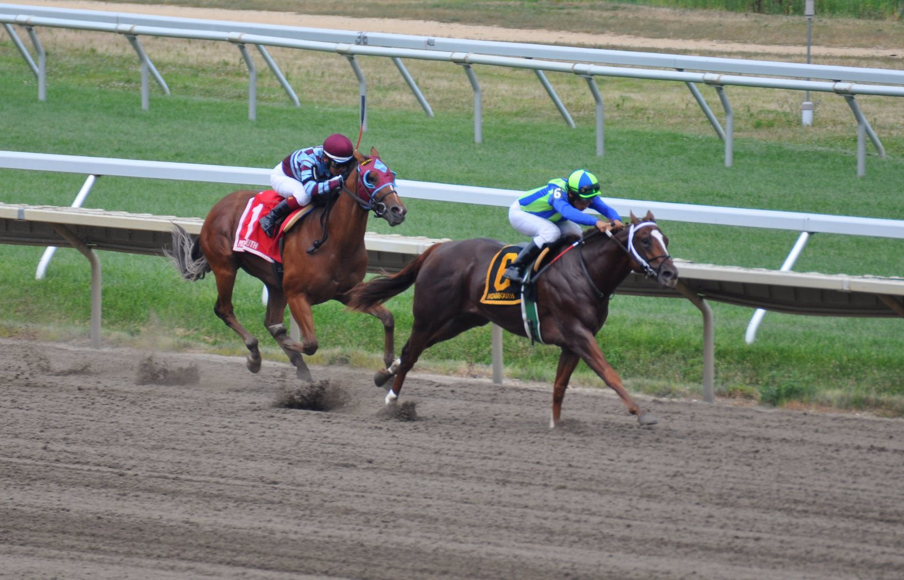

Aidan O'Brien llega a Ascot con el noveno título británico en juego y Balding al acecho
Aidan O'Brien repasó sus opciones para el British Champions Day de Ascot, este fin de semana, con un noveno título de preparador campeón en Gran Bretaña a su alcance y Andrew Balding apretando.

La temporada británica de 2026 encara su recta final con O'Brien en cabeza, pero sin margen para relajarse: Andrew Balding le discute el campeonato de preparadores. El irlandés habló en la rueda de prensa del Qatar Racing British Champions Day organizada por Ascot y se mostró orgulloso de volver a estar en la pelea por el título.
Repasó uno a uno sus participantes para un programa de fuerte dotación. Entre ellos figuran Constitution River, Gstaad y Confucius.
Con uno de sus caballos fue especialmente autocrítico. «Lo hemos hecho muy mal con él. Trabaja muy bien en casa y no conseguimos que lo traslade a la pista», reconoció. La última vez le pusieron anteojeras y no le gustaron: «No fue cómodo en ningún momento». Esta vez correrá sin ningún accesorio en la cabeza. «Es un caballo con clase, pero todavía no se le ha visto en carrera. Haremos una carrera normal con él y veremos qué pasa, aunque tiene mucha calidad».
Para las dos millas, O'Brien cuenta con Queenstown. «Es un caballo sólido y la distancia le irá bien. Estamos muy contentos con él», explicó. Admitió que algunos rivales llegan con mejores credenciales y deberían terminar por delante, aunque cree que el caballo sigue progresando.
La otra baza en esa distancia es Amelia Earhart, que llega de una buena actuación en Francia, donde terminó remontando en los metros finales. O'Brien también preparó a su hermano, Cleveland, que daba su mejor rendimiento sobre dos millas. «Parece una potranca que aguantará sin problema las dos millas», afirmó el preparador.
Por Martín Larrañeta